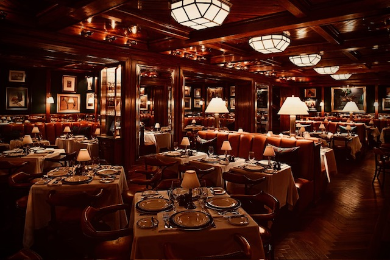

What Klarity's Training Programs Cover
Effective restaurant staff training goes well beyond memorizing a menu. Klarity's training programs are built around practical, repeatable skill-building that translates directly to the floor. Our programs cover:
- Front-of-house service standards: greeting protocols, table mechanics, pacing, and anticipating guest needs
- Safety and emergency preparedness: choking response, slip and fall prevention, and procedures for medical incidents
- Upselling and suggestive selling techniques that feel natural rather than scripted
- Product knowledge: ingredients, preparation methods, allergens, and menu storytelling
- Management and leadership development for supervisors promoted from within
The Cost of Skipping Proper Training
Restaurant staff turnover averages approximately 75% annually — one of the highest rates of any industry. Replacing a single front-of-house employee costs an estimated $3,000 to $5,000 when accounting for recruiting, onboarding time, and lost productivity during the learning curve. Beyond the financial toll, undertrained staff produce inconsistent guest experiences that erode online reviews, reduce repeat visits, and gradually damage your brand. Inadequate safety training creates liability exposure as well — incidents that a trained team would prevent become your legal and financial responsibility.
Training vs. Reprimanding
One of the most common and costly patterns in restaurant management is correcting mistakes instead of preventing them through training. When a staff member makes a service error, the instinct is to reprimand. But if that employee was never given the right tools and clear standards in the first place, reprimanding is both unfair and ineffective. Klarity's approach establishes expectations before holding staff accountable to them. The result is a team that understands what is expected, has practiced meeting those standards, and responds to feedback constructively — not defensively. This distinction alone is one of the most meaningful drivers of reduced turnover and improved service consistency.
Who Benefits
Klarity's training programs are designed for three types of situations: new restaurant staff who need structured onboarding rather than being thrown onto the floor during a busy service; restaurants experiencing high turnover who want to address root causes rather than continuously cycling through new hires; and managers promoted from within who have strong operational instincts but need the leadership skills to match their new responsibilities. We serve restaurants throughout Charlotte, NC and the Southeast.
Our Training Approach
Every Klarity training program is built to your specific restaurant's concept, service style, and team composition — there is no generic script. Programs combine hands-on practice with clear standards documentation so training is not a one-time event but an ongoing framework your team can reference and build on. We focus on reinforcement through repetition and positive feedback rather than correction through punishment. This approach produces staff who take pride in their performance and stay.
Frequently Asked Questions
How do you train restaurant staff effectively?
Effective restaurant staff training relies on hands-on practice over passive instruction, consistent documentation of standards that staff can reference on the job, and a culture of reinforcement rather than punishment. Training should be role-specific, appropriately timed, and followed by structured check-ins at 30, 60, and 90 days.
What is the average restaurant staff turnover rate?
The restaurant industry averages approximately 75% annual staff turnover — meaning three out of four employees leave within a year. Klarity's training programs address the most common underlying causes: unclear expectations, lack of skill development, and managers who correct without coaching.
How long does restaurant staff training take?
It depends on the role and complexity of your concept. A front-of-house server training program typically runs 5 to 10 days to reach full proficiency. Management development programs are longer and ongoing. Klarity builds custom timelines based on your specific needs and schedule.
Can training actually reduce turnover?
Yes. Employees who receive structured, meaningful training in their first 90 days are significantly more likely to remain beyond 12 months. The primary reason restaurant staff leave is not pay — it is feeling undertrained, unsupported, and unable to perform their job confidently. Investing in proper training addresses the root cause of departure rather than cycling through new hires.
Klarity's training programs work best alongside restaurant consulting that aligns your operations and quality assurance systems that hold the standard your team is trained to meet.